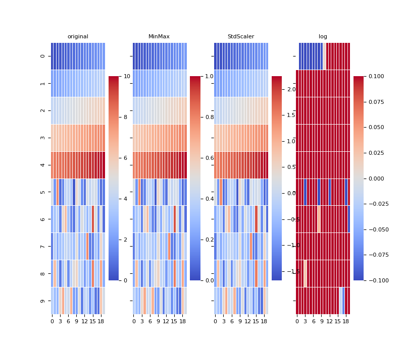
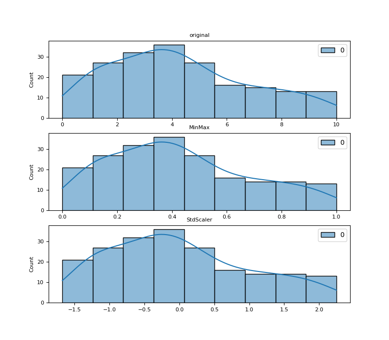

Note
Click here to download the full example code
Show colormap for various scalings
The dummy piece of code included below demonstrates visually that the transformation using the MinMaxScaler or StandardScaler does not affect the colormap. These transformations compute a ‘mapping’ but do not alter the values and/or their distribution. See the formulas below:
\[MinMaxScaler (x_{scaled}) = x_{std} * (x_{max} - x_{min}) + x_{min}\]
\[where x_{std} = (x - x_{min}) / (x_{max} - x_{min})\]
\[StandardScaler (x_{scaled}) = (x - x_{mean}) / x_{std}\]
- 
- 
27 # Library
28 import numpy as np
29 import seaborn as sns
30 import matplotlib as mpl
31 import matplotlib.pyplot as plt
32
33 from sklearn.preprocessing import MinMaxScaler
34 from sklearn.preprocessing import StandardScaler
35
36 # See https://matplotlib.org/devdocs/users/explain/customizing.html
37 mpl.rcParams['axes.titlesize'] = 8
38 mpl.rcParams['axes.labelsize'] = 8
39 mpl.rcParams['xtick.labelsize'] = 8
40 mpl.rcParams['ytick.labelsize'] = 8
41
42 # Create data
43 linear = np.linspace(0, 10, 100)
44 rayleigh = np.random.rayleigh(3, 100)
45 original = np.concatenate((linear, rayleigh)).reshape(-1, 1)
46 #original = rayleigh.reshape(-1, 1)
47
48 # Create scalers
49 mmx = MinMaxScaler().fit(original)
50 std = StandardScaler().fit(original)
51
52 # Display
53 fig, axs = plt.subplots(nrows=1, ncols=4,
54 sharey=True, sharex=False, figsize=(8, 7))
55
56 for i, (name, data) in enumerate(
57 [('original', original),
58 ('MinMax', mmx.transform(original)),
59 ('StdScaler', std.transform(original)),
60 ('log', np.log(original))]):
61
62 sns.heatmap(data.reshape(10, -1), annot=False,
63 linewidth=0.5, cmap='coolwarm', ax=axs[i], zorder=1,
64 cbar_kws={
65 # 'label': 'value [unit]',
66 'use_gridspec': True,
67 'location': 'right'
68 }
69 )
70 axs[i].set_title(name)
71
72
73 fig, axs = plt.subplots(nrows=3, ncols=1,
74 sharey=True, sharex=False, figsize=(8, 7))
75
76 for i, (name, data) in enumerate(
77 [('original', original),
78 ('MinMax', mmx.transform(original)),
79 ('StdScaler', std.transform(original))]):
80 #sns.displot(data=data.reshape(1, -1).tolist(), ax=axs[i],
81 #bins=100)
82 #kind="kde")
83 #sns.kdeplot(data=data.reshape(1, -1).tolist(), ax=axs)
84 sns.histplot(data=data.reshape(1, -1).tolist(), ax=axs[i], kde=True)
85 axs[i].set_title(name)
86
87
88 # Show
89 plt.show()
Total running time of the script: ( 0 minutes 0.773 seconds)